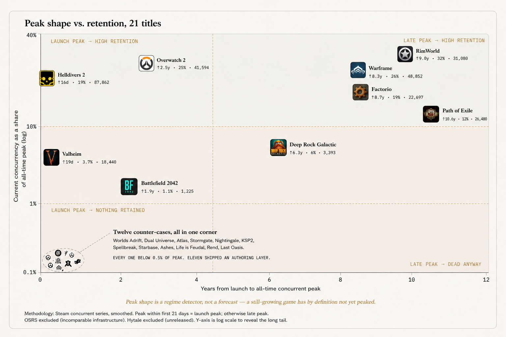

Forty-eight million players, four shutdowns
The marketing worked. That is the problem.Start with the cases that cannot be explained by failed discovery, failed awareness or failed community. All four of these acquired at scale, and all four are gone.
| Title | Acquired | Outcome |
|---|---|---|
| XDefiant | 11M players, 1M in a 2023 closed beta | Shut within twelve months; 277 jobs across three studios |
| MultiVersus | 20M players, 153,433 Steam peak | 686 concurrents at the end; $100M-plus impairment; shut May 2025 |
| Knockout City | 12M lifetime players, well reviewed | Shut June 2023; the studio called live games immensely challenging |
| Spellbreak | 5M players in three weeks | Averaged 166 concurrents before closure |
Players acquired before shutdown, by title. Bar length is illustrative of scale, not a unified metric — see the definitions caveat below.
Those four figures use four different definitions and are not additively comparable: registered players, lifetime players, and one three-week total. They are shown together because the scale of the gap survives any reasonable reconciliation, not because the sum is a unique-user count. Certain Publisher-stated
Not one of these is a discovery failure. Every one is a retention failure, and retention was never the thing being funded. Ubisoft's language on closing XDefiant is the tell: games-as-a-service remains a pillar of our strategy, announced in the same breath as the shutdown.
The pre-launch version of the same failure
Community asset at maximum, product at zero.The identical shape appears before launch, in cases where the audience arrived and the game never did.
| Case | Community asset | Outcome |
|---|---|---|
| The Day Before | Most-wishlisted game on Steam by May 2022; 494,330 Twitch peak | Zero players, 15.7% positive; studio closed within a fortnight |
| Deadlock | Valve's most-wishlisted title, 171,490 peak | Lost roughly 90% of players |
| Stormgate | 76,809 followers; just under $40M raised | 4,854 all-time peak; online support ended April 2026 |
| Ashes of Creation | $3.2M from almost 20,000 backers | 31,882 peak down to 4 players; unpaid-fees suit filed late 2025 |
| Hytale | Grew out of a Minecraft server with a large existing playerbase | Cancelled by Riot 2025, bought back, relaunched January 2026, then collapsed |
| KSP2 | One of PC gaming's most engaged simulation communities | 61 players, 25.7% positive; Intercept Games closed by Take-Two |
Star Citizen is often filed here and should not be. Over $1B raised from 6.5M people and still in early access after nine years is a governance and scope failure. It is retaining its cohort fine. That is the problem.
The toolset hypothesis, and why it fails
The launch dates destroy a very clean story.The natural next move is to say the survivors shipped something players could author into: mods, deep systems, build space, player-run economies. Check when those layers actually shipped and the mechanism disappears.
Among the long-tail games, the layer usually arrived years after the audience
| Game | Participation layer | Shipped |
|---|---|---|
| Warframe | TennoGen cosmetics only; never gameplay mods | Oct 2015 · +2.6 years |
| Deep Rock Galactic | Official mod.io support | Sep 2021 · +3.5 years |
| Factorio | Mod Portal with 0.13 | Jun 2016 · +4 months |
| Valheim | None. Iron Gate: no official mod support | Never |
| Path of Exile | None. Barter economy, 13-week leagues | Never |
| Helldivers 2 | None. A GM-run war players can lose | Never |
| RimWorld | Steam Workshop mods and scenarios | Day one of early access |
| Old School RuneScape | Binding player polls at a 70% threshold | Seven days before launch |
Two of eight shipped it at launch. Three never shipped it at all. Certain Developer-stated
Time from launch to the participation layer shipping, eight games from the table above.
Among the failures, several shipped it early and comprehensively
Worlds Adrift is the cleanest refutation available. The Workshop-backed Island Creator shipped 28 April 2016, more than a year before the game, and every island in the world was player-made. It never exceeded 2,057 concurrents and shut in July 2019 as no longer commercially viable.
Hytale is the live case. Riot cancelled it and began closing Hypixel Studios in June 2025; co-founder Simon Collins-Laflamme bought it back and shipped a four-year-old legacy-engine build. Server-side modding, community servers, live editors, no-code trigger volumes and monetisable mods all shipped at early access launch in January 2026, and uptake was real: 20 million CurseForge mod downloads and more than 2,000 creators within weeks.
Crowfall inverts the thesis completely. The player-facing campaign system was the stated cause of death: the sheer amount of development effort required to build new campaigns and keep the game running daily. And the list runs on. Landmark, where the game itself was the creation toolkit, dead in eight months. Dual Universe, with an NPC-free player economy and Lua scripting at launch, peak 792. Atlas, with the full DevKit, Workshop and private-server stack, down 99.5% from a 58,939 peak. WildStar, with a player-set currency economy, deep housing and player-built War Plots, closed and its studio shut.
What actually separates them
Four quadrants, and every one of them is occupied.Plot the two variables that are supposed to be related. On one axis, how long after launch the all-time concurrent peak arrived. On the other, how much of that peak the game still holds today.

Late peak, high retention. RimWorld at 32% of peak, Warframe at 26%, Factorio at 19%, Path of Exile at 12%. This is the group the toolset story was built to explain, and it does contain the deepest player-authored ecosystems.
Late peak, dead anyway. Battlefield 2042 reached its all-time Steam peak in October 2023, nearly two years after launch, and holds 1.1% of it. Deep Rock Galactic peaked six years in and sits at 3,393 concurrent players.
Launch peak, high retention. Helldivers 2 peaked sixteen days after release and currently holds 87,862 concurrent, the largest number in this entire sample. Overwatch 2 sits at 25% of its Steam peak.
Launch peak, nothing retained. Twelve games, every one below 0.5% of peak, and eleven of the twelve shipped a genuine authoring layer.
Peak shape describes a regime. It does not predict retention, and it is partly circular in any case, since a game that is still growing has by definition not yet peaked. Treat it as a regime detector, never as a forecast on an unlaunched title.
Two readings
IP is the third path
Push marketing works fine when it has something to push.The claim that audiences have become immune to marketing does not survive the sales figures.
Hogwarts Legacy launched into an organized boycott, meaning the loudest community activity around it was hostile, and took $850M with more than 12M units in two weeks. Circana named it the best-selling US game of 2023 at more than 22M copies, ending a fourteen-year streak held by Call of Duty and Rockstar, on lukewarm initial reviews. Certain Publisher and Circana
Monster Hunter Wilds took more than 10M in its first month, a Capcom record. Diablo IV did $666M of sell-through in five days. Pokemon Scarlet and Violet did 10M in three days on a three-out-of-five review citing performance problems. Assassin's Creed Shadows passed 5M players through a sustained negativity campaign. On mobile, Monopoly Go generated $2B on reported user-acquisition spend between $500M and $1.5bn.